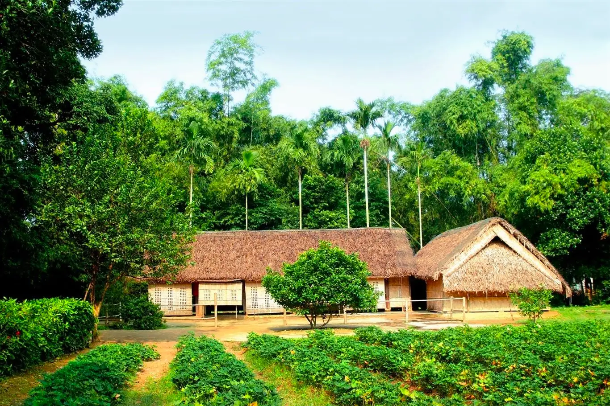

Nghệ An - Về Miền Quê Bác
"Bạn biết không, Nghệ An quê Bác là vùng đất hội tụ nét đẹp sự hòa quyện giữa thiên nhiên hoang sơ và di sản văn hóa lâu đời. Không chỉ thế, đây còn là tỉnh có diện tích lớn nhất Việt Nam với đường bờ biển dài hơn 82km lận đó!"



Điểm nổi bật của Tour
- Khám phá văn hóa lịch sử: Thăm quan Khu di tích Kim Liên (quê nội và quê ngoại Bác Hồ) tại huyện Nam Đàn, tìm hiểu về tuổi thơ của vị lãnh tụ kính yêu.
- Trải nghiệm biển xanh: Tắm biển tại bãi biển Cửa Lò trong xanh, tham gia các hoạt động vui chơi giải trí trên cát và ngắm bình minh tuyệt đẹp.
- Thưởng thức ẩm thực xứ Nghệ: Thưởng thức các món đặc sản trứ danh như nhút Thanh Chương, tương Nam Đàn, mực nhảy Cửa Hội và cháo lươn xứ Nghệ đậm đà.
Lịch trình tóm tắt (2 Ngày 1 Đêm)
- Ngày 1: TP. Vinh - Quê Bác (Nam Đàn) - Biển Cửa Lò (Ăn trưa đặc sản, chiều tắm biển, tối thưởng thức hải sản).
- Ngày 2: Đón bình minh Cửa Lò - Mua sắm đặc sản chợ hải sản - Khởi hành về lại điểm xuất phát.
Giá trọn gói cho 1 khách:
1.800.000 VNĐ